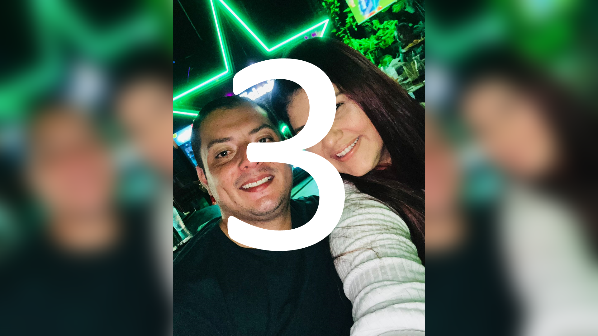
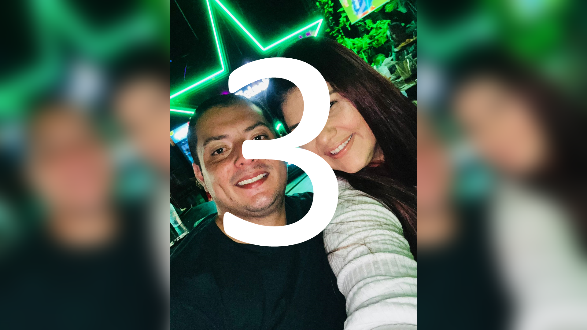
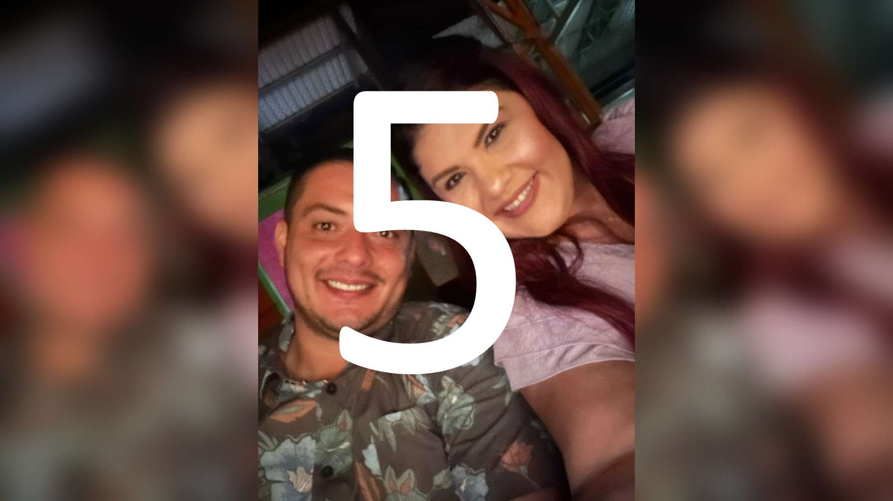
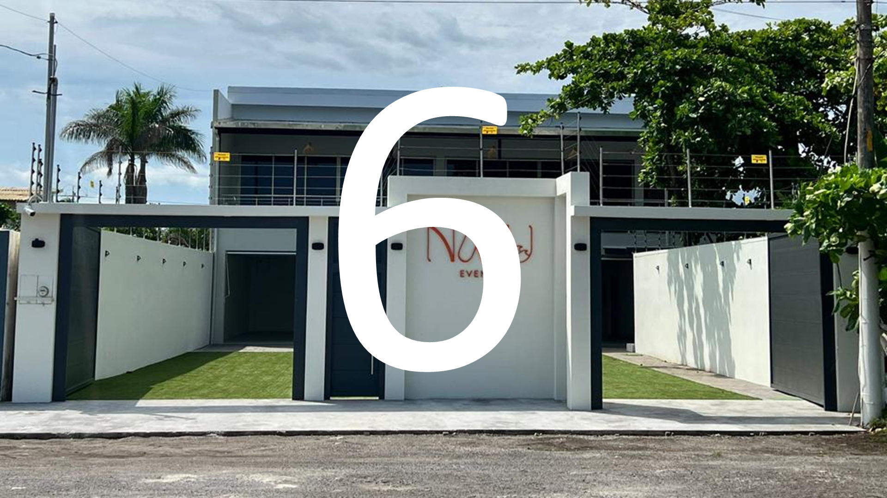
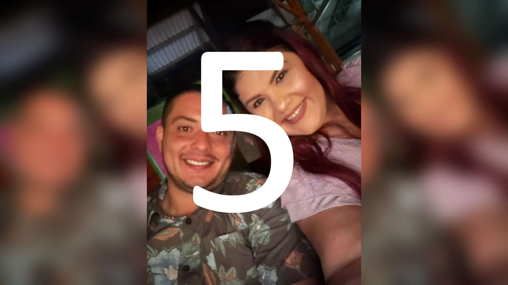
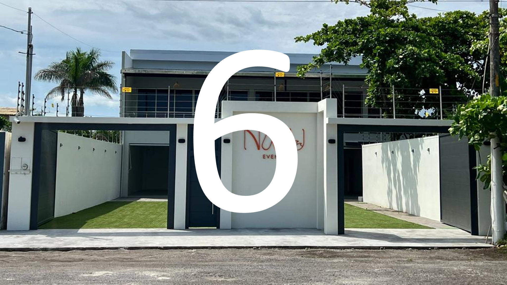

 



Con una gran emoción te invitamos a descubrir lo que nos hemos preparado...
Mariela y Julio CésarÉrase una vez un precioso 15 de Marzo allá por el 2024 en el que Mariela y Julio César en una mágica tarde de verano a las 18:00 h en la iglesia parroquial de Santa María compartieron su emotiva ceremonia de matrimonio con familiares y amigos. Cuenta la leyenda que posteriormente todos celebraron el acontecimiento en un hermoso jardín a la luz de un cálido de anochecer en Julio César y los festejos se prolongaron hasta bien entrada la noche y aún hoy este paraje nos recuerda lo felices que somos. Nos haría mucha ilusión que confirmen su asistencia para formar parte con nosotros de esta maravillosa historia de amor. |
 Sírvase confirmar su asistencia
Sírvase confirmar su asistencia